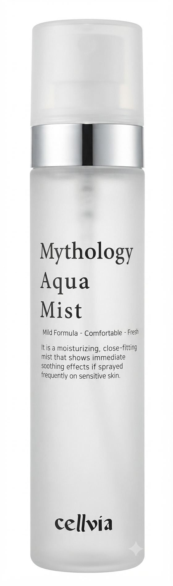

毎日の水分をチャージする、肌のオアシス
ミソロジー アクア ミスト
Mythology Aqua Mist
ブライトニングケア*1
深い潤い
みずみずしい水分供給
100 ml
#1 アクアコンディショニング
#2 急速水分チャージ
#3 マイルド処方
#4 ディープモイスチャー
ナイアシンアミド配合。潤いで満たし、透明感あふれる明るい印象へ導くミスト！
● 4 KEY POINTS
POINT 01
透明感あふれるツヤ
スプレーするたび明るい印象へ
POINT 02
水分＆保湿レイヤリング
一度に叶える潤いベール
POINT 03
乾燥へのアプローチ
深い保湿力で角質層までケア
POINT 04
All Day ミスト
毎日持ち歩ける手軽な潤い
- ✔ いつでも手軽に補給できる急速水分チャージ
- ✔ 水分のエナジーが伝える、みずみずしい保湿ベールの形成
- ✔ 乾燥によるくすみがちな肌コンディションのケアに
- ✔ マイルド処方による、やさしく穏やかな使用感
- ✔ 乾燥する隙を与えず、毎瞬しっとり感をキープ
主要成分と特徴
1. ヒト羊水細胞順化培養液エキス
肌に豊かな潤いと栄養を与え、健やかで弾むようなコンディションへ導くコンディショニング成分。

5. ヒドロキシデシル
ユビキノン
肌を優しく保護し、キメの整ったなめらかで健康的な肌環境へ導きます。
2. トラネキサモイルジペプチド-23
肌にツヤと活力を与え、クリアで透明感のある印象へ導くブライトニングサポート成分。
6. シロキクラゲ
エキス
植物性のヒアルロン酸やβ-グルカンを豊富に含み、肌にたっぷりの水分と潤いを補給します。
3. ナイアシンアミド
肌のキメを整え、乾燥によるくすみを防ぐことで、明るく均一な印象の肌へ整えます。
7. カミツレ花エキス
乾燥などの外的刺激から肌を保護し、デリケートに傾きがちな肌を穏やかに整え、活力を与えます。
4. アデノシン
肌にハリと弾力を与え、年齢に応じたエイジングケアをサポートし、健やかな状態を保ちます。*2
8. ヤマノイモ根エキス
フィトムチン成分を含有し、肌表面にしっとりとした潤いのベールを形成。なめらかな肌へ導きます。
* 上記の内容は原料の一般的な特性に限ります。
*1 潤いを与え、透き通るようなツヤ肌に導くこと。
*2 年齢に応じたお手入れのこと。
使用方法
肌が乾燥を感じるたびに、顔から30cmほど間隔を空け、目を閉じた状態で顔全体に均一にスプレーしてください。